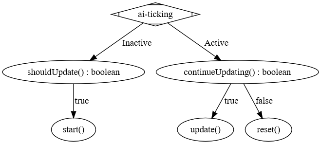

Implement Your Own AITasks¶
Before we start implementing our own AITask we have to make sure our workspace is properly configured. Please follow the instructions in Using MCP in Plugins.
Here is a list of imports we will use while implementing the AITask.
import java.util.Comparator;
import java.util.Optional;
import java.util.function.Predicate;
import org.spongepowered.api.GameRegistry;
import org.spongepowered.api.entity.Entity;
import org.spongepowered.api.entity.ai.task.AITask;
import org.spongepowered.api.entity.ai.task.AITaskType;
import org.spongepowered.api.entity.ai.task.AbstractAITask;
import org.spongepowered.api.entity.living.Agent;
import com.flowpowered.math.vector.Vector3d;
import com.google.common.base.Preconditions;
import net.minecraft.entity.EntityLiving;
import net.minecraft.entity.ai.EntityAIBase;
import net.minecraft.pathfinding.PathNavigate;
To simplify the implementation we use the following constants. They are optional and could be easily replaced by dynamic fields set via a constructor.
private static final double MOVEMENT_SPEED = 1;
private static final double APPROACH_DISTANCE_SQUARED = 2 * 2;
private static final double MAX_DISTANCE_SQUARED = 20 * 20;
private static final float EXECUTION_CHANCE = 0.2F;
private static final int MUTEX_FLAG_MOVE = 1; // Minecraft bit flag
If you want to implement your own AITask then you must extend AbstractAITask with your task. The
following example shows an example implementation of such a custom AITask. Also we need to generate a new
AITaskType for our AITask. To avoid spreading the logic everywhere we simply create a static field and a
register method for it in the class itself as shown by the following code example:
public class CreepyCompanionAITask extends AbstractAITask<Agent> {
private static AITaskType TYPE;
public static void register(final Object plugin, final GameRegistry gameRegistry) {
TYPE = gameRegistry
.registerAITaskType(plugin, "creepy_companion", "CreepyCompanion", CreepyCompanionAITask.class);
}
[...]
}
Of course we still need to call that method from our main class, but that can be easily done like this from our plugin main class:
@Listener
public void onInitialize(final GameInitializationEvent event) {
CreepyCompanionAITask.register(this, game.getRegistry());
}
After that we can finally start implementing the AITask. For this we need to implement a total of seven methods and a constructor:
CreepyCompanionAITask(...)boolean canRunConcurrentWith(AITask<Agent>)boolean canBeInterrupted()boolean shouldUpdate()void start()boolean continueUpdating()void update()void reset()
The following image roughly describes the method execution order:
We need the constructor to set any parameters we want our AITask to have and configure some base options for it. In
this case its setting the AITaskType and configuring the mutex bits along with an entityFilter
Predicate, that we will use later on.
private final Predicate<Entity> entityFilter;
private Optional<Entity> optTarget;
public CreepyCompanionAITask(final Predicate<Entity> entityFilter) {
super(TYPE);
this.entityFilter = Preconditions.checkNotNull(entityFilter);
((EntityAIBase) (Object) this).setMutexBits(MUTEX_FLAG_MOVE);
}
Unfortunately we have to resort to dirty casts to plain Minecraft classes. This is also the reason we have to setup our workspace with MCP mappings.
After that we continue with the first set of methods: canRunConcurrentWith and canBeInterrupted. They are very
easy to implement. For the first one we are going to rely on the default Minecraft logic. However this once again
requires dirty casts. For the second one we just have to consider whether it can be interrupted or needs to complete
first.
@Override
public boolean canRunConcurrentWith(final AITask<Agent> other) {
return (((EntityAIBase) (Object) this).getMutexBits() & ((EntityAIBase) other).getMutexBits()) == 0;
}
@Override
public boolean canBeInterrupted() {
return true;
}
With this we have all we need to actually put some custom logic in our AITask. Namely the logic when to start and
what to do in that case. We start with the check whether the task should be executed. This is usually done in two steps:
- Checking a random execution chance
- Searching for a suitable target
The actual execution is then just doing the desired thing with the target we found.
@Override
public boolean shouldUpdate() {
final Agent owner = getOwner().get();
if (owner.getRandom().nextFloat() > EXECUTION_CHANCE) {
return false;
}
final Vector3d position = getPositionOf(owner);
this.optTarget = owner.getWorld()
.getEntities().stream()
.filter(this.entityFilter)
.filter(e -> getPositionOf(e).distanceSquared(position) < MAX_DISTANCE_SQUARED)
.sorted(Comparator.comparingDouble(e -> getPositionOf(e).distanceSquared(position)))
.findFirst();
return this.optTarget.isPresent();
}
@Override
public void start() {
getNavigator().tryMoveToEntityLiving((net.minecraft.entity.Entity) this.optTarget.get(), MOVEMENT_SPEED);
}
The owner’s Random is usually a good source of randomness in those tasks, but any other Random would work
as well. The sole reason the Entity has a random is to avoid having a Random in every class that
interacts with the entity.
The search for the target is pretty straight forward. First we get all entities from the world the entity is currently
in and then we filter that list using the entityFilter Predicate that we set in the constructor. After that we
remove all entities that are too far away. In our case that are 20 blocks, but you can increase this distance some more.
Please keep in mind that by increasing the range you also increase the computation time needed for path-finding.
After we have found our target we just have to tell the entity move towards it. The speed is an very important factor for this. If the speed is too fast, then the entity might as well accidentally miss the target and end up running back and forth forever (so make sure that you calculate your acceptance criteria appropriately). If the speed is too slow, then the entity will barely move (which looks somewhat strange and makes tasks such as follow X ridiculous).
The above code contains some method calls that have been added to increase the code readability, the following code block shows those helper methods:
private Vector3d getPositionOf(final Entity entity) {
return entity.getLocation().getPosition();
}
private PathNavigate getNavigator() {
return ((EntityLiving) (getOwner().get())).getNavigator();
}
The first method just calls a few methods in one go, the other gets the PathNavigate or movement controller from the
entity, which requires casting to Minecraft classes.
The last part we have to implement is the check whether the task should continue running and what needs to be done for that.
@Override
public boolean continueUpdating() {
if (getNavigator().noPath()) {
return false;
}
if (!this.optTarget.isPresent()) {
return false;
}
final Entity target = this.optTarget.get();
return getPositionOf(target).distanceSquared(getPositionOf(getOwner().get())) > APPROACH_DISTANCE_SQUARED;
}
@Override
public void update() {
}
@Override
public void reset() {
getNavigator().clearPath();
this.optTarget = null;
}
For our AITask this is very easy. First we check whether the entity lost its path and then whether the entity is
already close enough. If we return false, then Minecraft will invoke the reset() method next. There we should
perform some cleanup. Especially the reference to the entity should be cleaned up, because otherwise we risk a memory
leak. If we return true, then Minecraft will invoke update(), which does nothing in our case because the
movement controller works independent from the AI and the entity will continue walking towards the target.
That’s all there is to writing custom AITasks. Now we can actually use it inside of an Entity, the
“Adding additional AITasks” chapter on the Entity AI page explains how to do it.
But why did we call this task CreepyCompanionAITask? There is a simple solution to that. When checking whether the
AITask should be executed, we don’t check whether the entity is already close enough, thus it will move a tiny bit
towards the target each time. The next step in creepiness would probably be, that the entity only does this if the
target is not looking. Imagine a creeper slowly approaching from your back.